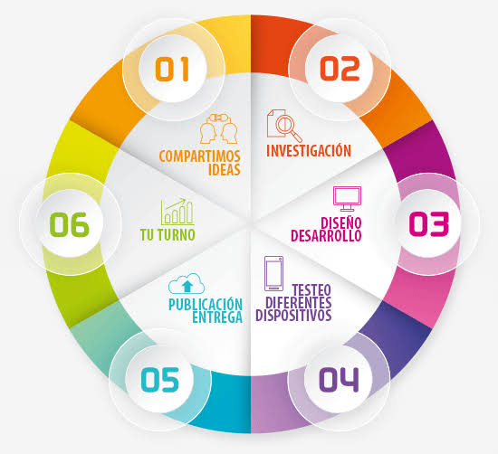

Planificación de Aplicaciones Web
Es el proceso previo al desarrollo de las aplicaciones web que perminte organizar, estructurar y anticipar los recursos, requerimientos y actividades necesarias para construir una aplicación eficiente, segura y escalable.
Componentes Clave de la Planificación
- Objetivos: Definición clara de lo que el mini-sitio debe lograr, requerimientos técnicos y alcance de la Unidad 1.
- Recursos: Asignación de herramientas, editores, lenguajes, tiempos y responsabilidades entre los integrantes del equipo.
- Beneficios: Reducción de errores de integración, orden en la estructura de carpetas y cumplimiento eficiente de los entregables.
Esquema del Proceso
Representación visual del flujo de planificación del proyecto:
